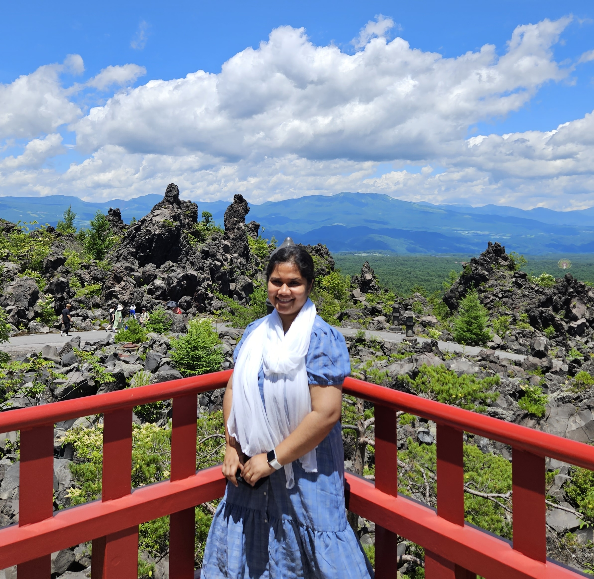

Emotion in LLMs
Emotion understanding, appraisal-style reasoning, and response generation for emotionally sensitive applications.

Postdoctoral Researcher
Language and Information Research Team
Artificial Intelligence Research Center (AIRC), AIST
Tokyo, Japan
Email: rf.munne@aist.go.jp
I am an NLP researcher specializing in LLM reasoning, document-level information extraction, entity alignment, and knowledge representation, with current research spanning scientific and biomedical NLP, ontology-guided reasoning, low-resource information extraction, and emotion-aware text generation for LLMs. My work studies how language models and structured knowledge can infer implicit meaning from complex, domain-specific documents and transform it into structured, interpretable, and useful representations.
My background combines 14+ years of AI research and software engineering experience across AIST, RIKEN, the National Institute of Informatics, and Samsung Electronics.
I welcome inquiries, collaborations, and research opportunities.
Artificial Intelligence Research Center (AIRC), AIST. Language and Information Research Team, P.I.: Prof. Hiroya Takamura.
RIKEN Center for Advanced Intelligence Project, Japan. Knowledge Acquisition Team, P.I.: Prof. Yuji Matsumoto.
Tokyo Institute of Technology, Japan
National Institute of Informatics, Japan
Samsung R&D Institute Bangladesh and Samsung Electronics, South Korea
Emotion understanding, appraisal-style reasoning, and response generation for emotionally sensitive applications.
Entity profile generation, LLM-based reasoning, and refinement methods for knowledge graph and information extraction tasks.
Ontology-driven concept recognition and low-resource annotation from biomedical and scientific literature.
NLP systems that turn scientific text into structured, reusable knowledge for search, discovery, and downstream reasoning.
R. F. Munne, M. M. Rahman, Y. Matsumoto.
N. Nishida, R. F. Munne, S. Liu, N. Tokunaga, Y. Yamagata, F. Cheng, K. Kozaki, Y. Matsumoto.
R. F. Munne, N. Nishida, S. Liu, N. Tokunaga, Y. Yamagata, K. Kozaki, Y. Matsumoto.
R. F. Munne, M. M. Rahman, Y. Matsumoto.
Ph.D. in Informatics, National Institute of Informatics, Japan, 2023
M.Sc. in Informatics, National Institute of Informatics, Japan, 2020
M.Sc. in CSE, University of Dhaka, Bangladesh, 2014
B.Sc. in CSE, University of Dhaka, Bangladesh, 2011
Monbukagakusho (MEXT) Scholarship, 2016
Young Leadership Award, 2015
Samsung R&D Iconic Team Member, 2013
University of Dhaka Outstanding Result Scholarship, 2011